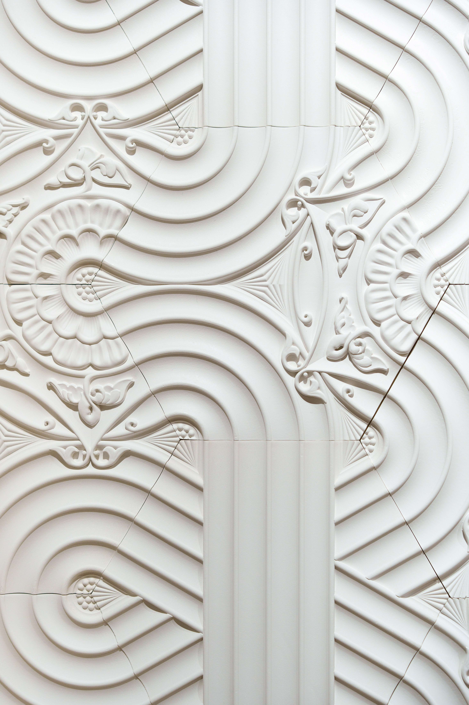
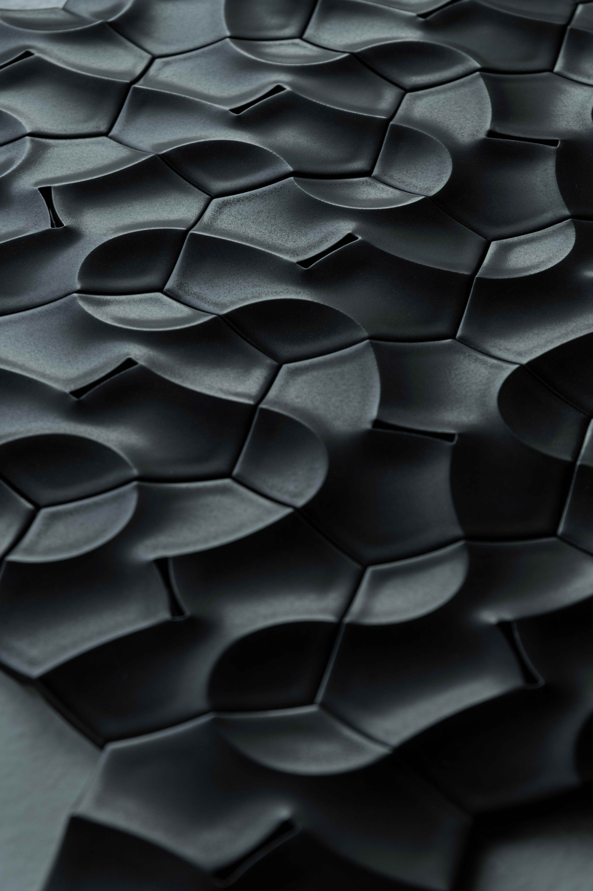

Kejun Li is an artist-engineer whose practice emerges from a background in large-scale infrastructure and evolves into sculptural and interactive works driven by the body and perception.
Trained in civil engineering in China, Li spent the early years of his career working on major bridge projects across Africa, where structural logic, coordination and material precision defined his daily practice. Since 2020, his focus has shifted toward art and design, expanding across Europe through computational design and self-initiated artistic research.
Since founding his Milan-based studio in 2022, Li has developed sculptural works that blur the boundaries between art, design and engineering. Presented at Milan Design Week, his projects have led to collaborations with international companies and manufacturers. He has been featured by Financial Times as one of the Five Bright Design Stars to Know Now (2025) and shortlisted for Wallpaper* China’s Emerging Designer of the Year (2025) .
At the core of his practice is the belief that objects can function as systems — engaging the body, activating interaction and reshaping perception.
Projects & Collaborations
The last gesture
 The Last Gesture, 2025 © Kejun Li
The Last Gesture, 2025 © Kejun Li
A nipple-activated light sculpture flips the gaze and expands into a ritual-like performance.
Gemini
 Gemini, 2025 © Kejun Li
Gemini, 2025 © Kejun Li
This collection with Bosa ceramiche explores duality through modular geometry, transforming flat hexagonal tiles into sculptural forms where curves and lines coexist in balance.
Neo-baroqueism

Neo-baroqueism, 2025 © Guanqiao Li
A modular tile system that reimagines architectural ornament through geometry and user interaction, exploring how historical decorative languages can be revitalized with modern fabrication and participatory engagement.
Cadenza

Cadenza in noir matt, 2025 © Andrea Maino
A hexagon-based ceramic tile collaboration with De Marchi Verona capable of generating three-dimensional surfaces and spatial rhythms, originally developed through computational exploration, this collection was later adopted for commercial production and presented internationally.
A tile and its thousand possibilities
 Alcova, 2023 © Kejun Li
Alcova, 2023 © Kejun Li
This project explores how a single fixed tile can generate endless visual outcomes through random, playful tessellation, transforming an ordinary object into an interactive and self-exploring design experience.
For collaborations, commissions or inquiries:
Kejun.li.17@gmail.com